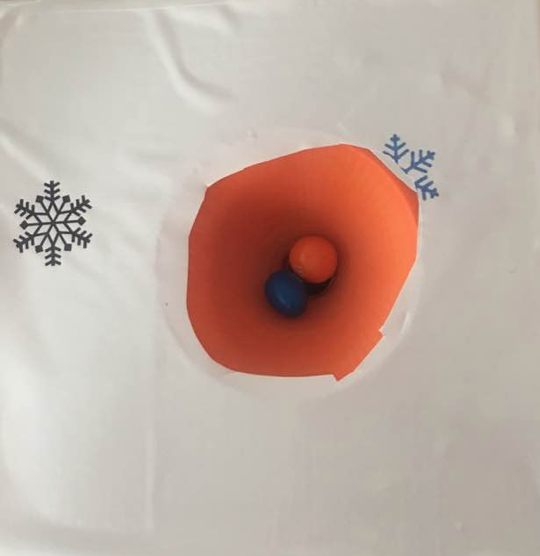
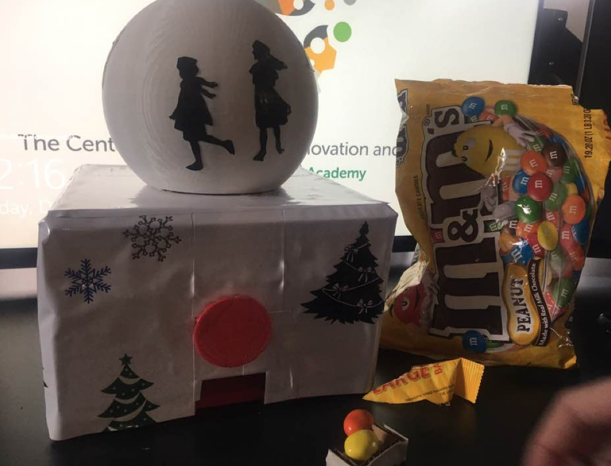
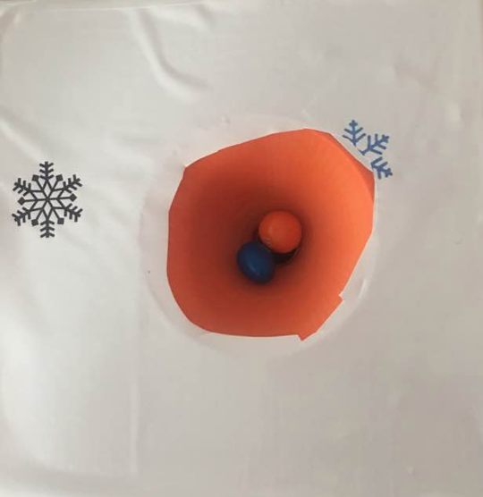
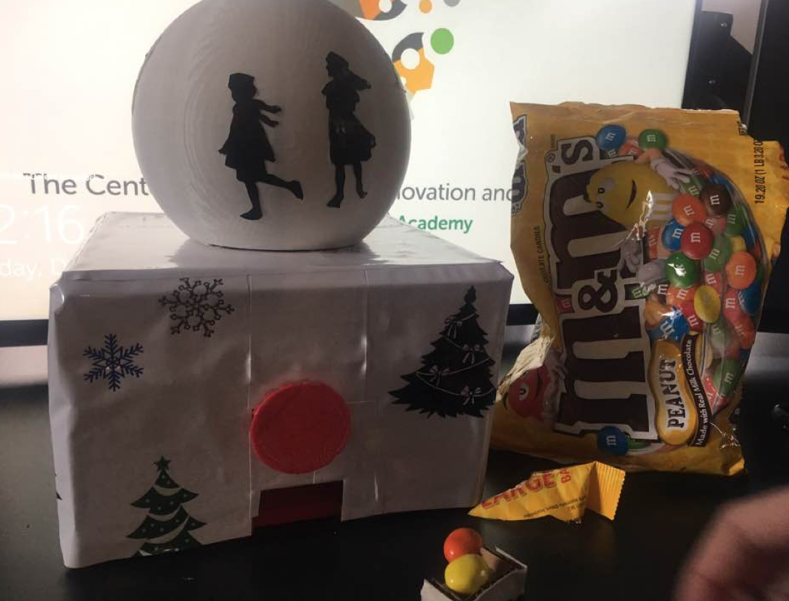
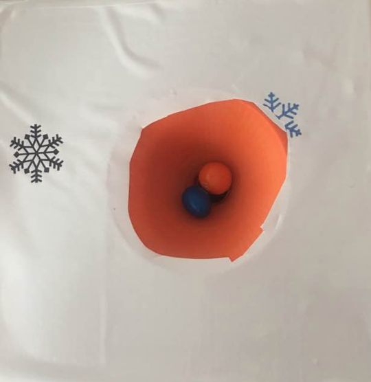
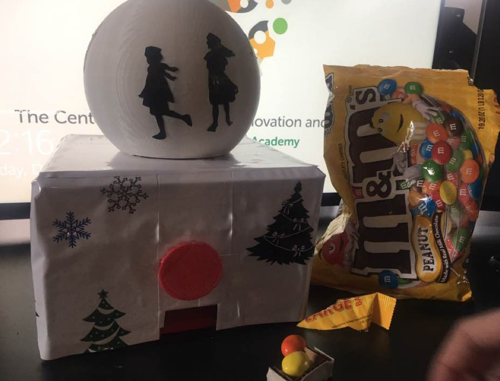

1) Convert “.stl” file to “.makerbot”. (Open the makerbot application where you can export the stl as makerbot file) 2) Make sure your figure has support to print. The maximum dimensions are: 25.2 L x 19.9 W x 15.0 H cm, The minimum height (thickness) of a rectangle is 1.2 mm/minimum width: .45mm (Preview how large your mesh is going to be before you print!) 3) Make sure you level the object to the platform level.
It was finally time for me to print out my arduino uno case. I was really nervous and excited at the same time because I did not know how it was going to turn out. After experiencing several failures, I was devastated. (The “failed” Arduino cases are shown below). Therefore, I decided to change the design a bit and lay them separately on the ground instead of having them overlap each other.


It was not until I printed out my final case when I realized that the top part had a texture like the bottom part usually has. However, it was a good fit for the arduino uno, so I am satisfied with how it turned out!
When I first started using makerbot, I was MINDBLOWN at what this machine could do. It seemed like a dream-come true because it could create anything we designed! However, as simple as the machine seemed to operate, I also experienced some struggles such as filament jam, smart extruder, and more. However, after I got to "use" the machine properly, I started to really enjoy making objects! I learned that in order for the machine to successfully print, you MUST take the limitations (of the makerbot) into consideration. If not, you probably would end up with something like my arduino uno failure version. When I get a chance to scan myself again, I would try doing a full body next time with more dynamic postures!